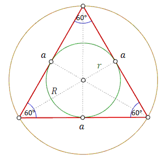
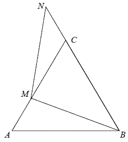

Trójkąt równoboczny
Trójkąt równoboczny ma wszystkie boki tej samej
długości. Kąty wewnętrzne trójkąta równobocznego są równe \(60^\circ \).  Wysokość trójkąta równobocznego można obliczyć ze wzoru:
\[h=\frac{a\sqrt{3}}{2}\] Wzór na pole trójkąta równobocznego: \[P=\frac{a^2\sqrt{3}}{4}\] Promień
okręgu wpisanego w trójkąt można obliczyć ze wzoru: \[r=\frac{1}{3}h=\frac{a\sqrt{3}}{6}\] Promień
okręgu opisanego na trójkącie można obliczyć ze wzoru: \[R=\frac{2}{3}h=\frac{a\sqrt{3}}{3}\] Własności
trójkąta równobocznego:
- Wysokości, dwusieczne, symetralne i środkowe pokrywają się i przecinają się w jednym punkcie.
- Środek okręgu opisanego i wpisanego leży na przecięciu wysokości.
- Wysokości przecinają się w stosunku \(2:1\)
Wysokość trójkąta równobocznego jest równa \(3\sqrt{3}\). Pole koła opisanego na
tym trójkącie jest równe
A.\( 2\pi\sqrt{3} \)
B.\( 4\pi\sqrt{3} \)
C.\( 6\pi \)
D.\( 12\pi \)
D
W trójkącie równobocznym \(ABC\) dana jest wysokość \(|CD|=3\). Średnica okręgu
opisanego na tym trójkącie ma długość:
A.\( 4 \)
B.\( \frac{2\sqrt{3}}{3} \)
C.\( \frac{4\sqrt{3}}{3} \)
D.\( 2 \)
A
Pole koła wpisanego w trójkąt równoboczny jest równe \(\frac{16}{3}\pi \). Obwód
tego trójkąta jest równy:
A.\( 12\sqrt{3} \)
B.\( 24 \)
C.\( 12 \)
D.\( 36 \)
B
Pole koła opisanego na trójkącie równobocznym o wysokości \(9\) jest równe
A.\(36\pi \)
B.\(9\pi \)
C.\(18\sqrt{3}\pi \)
D.\(12\pi \)
A
Na bokach trójkąta równobocznego \(ABC\) (na zewnątrz tego trójkąta) zbudowano
kwadraty \(ABDE\), \(CBGH\) i \(ACKL\). Udowodnij, że trójkąt \(KGE\) jest równoboczny. 
Małe trójkąty równoboczne o bokach długości \(1\) układano obok siebie tak, że
uzyskiwano kolejne, coraz większe trójkąty równoboczne, według reguły przedstawionej na poniższym
rysunku.  Ile małych trójkątów
równobocznych należy użyć, aby ułożyć trójkąt równoboczny o podstawie równej \(5\)? Wybierz właściwą
odpowiedź spośród podanych
Ile małych trójkątów
równobocznych należy użyć, aby ułożyć trójkąt równoboczny o podstawie równej \(5\)? Wybierz właściwą
odpowiedź spośród podanych
Ile małych trójkątów
równobocznych należy użyć, aby ułożyć trójkąt równoboczny o podstawie równej \(5\)? Wybierz właściwą
odpowiedź spośród podanych A.\( 9 \)
B.\( 16 \)
C.\( 25 \)
D.\( 50 \)
Obwód trójkąta równobocznego o polu \( \sqrt{3} \) jest równy:
A.\(1 \)
B.\(3 \)
C.\(6 \)
D.\(2 \)
C
Promień okręgu opisanego na trójkącie równobocznym jest równy \( 8 \). Wysokość
tego trójkąta jest równa
A.\(4\sqrt{3} \)
B.\(8\sqrt{3} \)
C.\(12 \)
D.\(6 \)
C
Promień okręgu opisanego na trójkącie równobocznym jest równy \(
\frac{16\sqrt{3}}{3} \). Obwód tego trójkąta jest równy
A.\(16\)
B.\(32\)
C.\(48\)
D.\(64\)
C
Pole koła opisanego na trójkącie równobocznym o wysokości \(9\) jest równe
A.\( 36\pi \)
B.\( 9\pi \)
C.\( 18\sqrt{3}\pi \)
D.\( 12\pi \)
A
Długość boku trójkąta równobocznego jest równa \(24\sqrt{3}\). Promień okręgu
wpisanego w ten trójkąt jest równy
A.\( 36 \)
B.\( 18 \)
C.\( 12 \)
D.\( 6 \)
C
Punkty \(A, B, C\) leżące na okręgu o środku \(S\) są wierzchołkami trójkąta
równobocznego.  Miara zaznaczonego na
rysunku kąta środkowego \(ASB\) jest równa
Miara zaznaczonego na
rysunku kąta środkowego \(ASB\) jest równa
Miara zaznaczonego na
rysunku kąta środkowego \(ASB\) jest równa A.\( 120^\circ \)
B.\( 90^\circ \)
C.\( 60^\circ \)
D.\( 30^\circ \)
A
Trójkąt ABC przedstawiony na poniższym rysunku jest równoboczny, a punkty \(B, C,
N\) są współliniowe. Na boku \(AC\) wybrano punkt \(M\) tak, że \(|AM| = |CN|\). Wykaż, że
\(|BM| = |MN|\). 
Dany jest trójkąt równoboczny, którego pole jest równe \(6\sqrt{3}\). Bok tego
trójkąta ma długość
A.\( 3\sqrt{2} \)
B.\( 2\sqrt{3} \)
C.\( 2\sqrt{6} \)
D.\( 6\sqrt{2} \)
C
Pole koła opisanego na trójkącie równobocznym jest równe \(\frac{1}{3}\pi ^3\).
Długość boku tego trójkąta jest równa
A.\( \frac{\pi}{3} \)
B.\( \pi \)
C.\( \sqrt{3}\pi \)
D.\( 3\pi \)
B
Dany jest trójkąt równoboczny o boku \(a\) oraz kwadrat o boku \(b\). Długość boku
\(b\) jest dwa razy mniejsza od długości boku \(a\). Oblicz, ile razy pole trójkąta jest większe od
pola kwadratu.
Pole trójkąta jest większe od pola kwadratu \(\sqrt{3}\) razy
Bok trójkąta równobocznego ma długość \(8\) cm. Odległość środka ciężkości tego
trójkąta od jego boków jest równa:
A.\( 2\frac{2}{3} \) cm
B.\( \frac{4\sqrt{3}}{3} \) cm
C.\( \frac{8\sqrt{3}}{3} \) cm
D.\( 4\sqrt{3} \) cm
B
Wyznacz długość boku kwadratu wpisanego w trójkąt równoboczny o boku \(a\) w ten
sposób, że jeden bok kwadratu jest zawarty w boku trójkąta, a dwa wierzchołki kwadratu należą do
pozostałych boków trójkąta.
\(a(2\sqrt{3}-3)\)